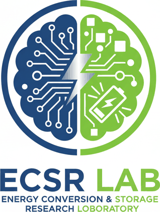

Advancing energy conversion & storage
Energy conversion and storage technologies play a key role in the sustainable use of energy.
At the Energy Conversion and Storage Research (ECSR) Lab, we design and develop thermal energy systems that use, convert and store energy efficiently, especially from renewable sources.
Our research uses experiments and computer models to understand how energy moves through thermal-fluid systems. The goals are better hydraulic performance, better process design, lower energy use and more reliable systems.

Experimental approach
Lab experiments that study how energy moves through complex thermal-fluid systems.
Computational analysis
Modelling and simulation to improve process design and reliability in many kinds of thermal applications.
Thermal energy storage
Phase change materials, latent heat storage and renewable heat. The PCM Library brings this work together as a free, open resource.
Global collaborations
The team behind the PCM Library
How to cite
If the PCM Library helps your research, please cite it like this:
Singh, S., & Singh, S. (2026). PCM Library: an open database of phase change materials for thermal energy storage. Energy Conversion and Storage Research (ECSR) Lab. https://ecsrlib.github.io/pcmlibrary.github.io/
Please also cite the original source listed for each property value you use.